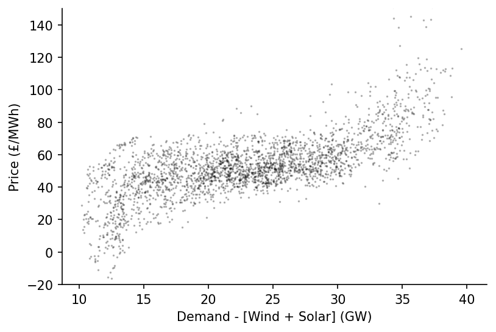

Marginal Cost Curve for Dispatchable Power in Great Britain¶

In this example we'll estimate the marginal cost curve over the last two months for dispatchable power in Great Britain using data from Electric Insights.
Imports¶
import numpy as np
import pandas as pd
import matplotlib.pyplot as plt
from moepy import retrieval, eda, lowess
Data Loading¶
We'll start by loading in the necessary data from Electric Insights
%%time
current_dt = pd.Timestamp.now()
start_date = (current_dt-pd.Timedelta(weeks=8)).strftime('%Y-%m-%d %H:%M')
end_date = current_dt.strftime('%Y-%m-%d %H:%M')
renaming_dict = {
'pumpedStorage' : 'pumped_storage',
'northernIreland' : 'northern_ireland',
'windOnshore': 'wind_onshore',
'windOffshore': 'wind_offshore',
'prices_ahead' : 'day_ahead_price',
'prices' : 'imbalance_price',
'temperatures' : 'temperature',
'totalInGperkWh' : 'gCO2_per_kWh',
'totalInTperh' : 'TCO2_per_h'
}
df = retrieval.retrieve_streams_df(start_date, end_date, renaming_dict=renaming_dict)
df.head()
Wall time: 7.75 s
| local_datetime | day_ahead_price | SP | imbalance_price | valueSum | temperature | TCO2_per_h | gCO2_per_kWh | nuclear | biomass | coal | ... | demand | pumped_storage | wind_onshore | wind_offshore | belgian | dutch | french | ireland | northern_ireland | irish |
|---|---|---|---|---|---|---|---|---|---|---|---|---|---|---|---|---|---|---|---|---|---|
| 2021-02-01 00:00:00+00:00 | 51.99 | 1 | 68.95 | 68.95 | 2.9 | 4797.76 | 175.8 | 5.564 | 1.945 | 0.465 | ... | 27.291 | 0 | 3.02828 | 3.51436 | 0.902 | 0 | 1.806 | 0 | 0.018 | -0.05 |
| 2021-02-01 00:30:00+00:00 | 54.19 | 2 | 69 | 69 | 2.9 | 5149.7 | 186.031 | 5.559 | 1.963 | 0.563 | ... | 27.682 | 0 | 2.90388 | 3.44746 | 0.902 | 0 | 1.806 | 0 | 0.016 | 0.016 |
| 2021-02-01 01:00:00+00:00 | 55.07 | 3 | 75 | 75 | 2.9 | 5177.97 | 189.309 | 5.565 | 2.077 | 0.68 | ... | 27.352 | 0 | 2.76413 | 3.36153 | 0.952 | 0 | 1.906 | 0 | 0.018 | 0.018 |
| 2021-02-01 01:30:00+00:00 | 56.3 | 4 | 72 | 72 | 2.9 | 5131.08 | 190.892 | 5.563 | 2.122 | 0.716 | ... | 26.8796 | 0 | 2.62404 | 3.19386 | 0.952 | 0 | 1.906 | 0 | 0.016 | 0.016 |
| 2021-02-01 02:00:00+00:00 | 56.71 | 5 | 75 | 75 | 2.9 | 5105.37 | 193.368 | 5.561 | 2.134 | 0.718 | ... | 26.4023 | 0 | 2.41751 | 2.93459 | 0.926 | 0 | 1.906 | 0 | 0.018 | 0.018 |
We'll quickly visualise the relationship between price and dispatchable load for each half-hour period
df_model = df[['day_ahead_price', 'demand', 'solar', 'wind']].dropna().astype(float)
s_price = df_model['day_ahead_price']
s_dispatchable = df_model['demand'] - df_model[['solar', 'wind']].sum(axis=1)
# Plotting
fig, ax = plt.subplots(dpi=150)
ax.scatter(s_dispatchable, s_price, s=0.5, alpha=0.25, color='k')
ax.set_ylim(-20, 150)
eda.hide_spines(ax)
ax.set_xlabel('Demand - [Wind + Solar] (GW)')
ax.set_ylabel('Price (£/MWh)')
Text(0, 0.5, 'Price (£/MWh)')

Marginal Cost Curve Estimation¶
We're now ready to fit our LOWESS model
x_pred = np.linspace(10, 40, 301)
y_pred = lowess.lowess_fit_and_predict(s_dispatchable.values,
s_price.values,
frac=0.25,
num_fits=25,
x_pred=x_pred)
pd.Series(y_pred, index=x_pred).plot()
<AxesSubplot:>

We'll then visualise the estimated fit alongside the historical observations
fig, ax = plt.subplots(dpi=250)
ax.plot(x_pred, y_pred, linewidth=1.5, color='r')
ax.scatter(s_dispatchable, s_price, color='k', s=0.5, alpha=0.25)
ax.set_ylim(-20, 150)
eda.hide_spines(ax)
ax.set_xlabel('Demand - [Solar + Wind] (GW)')
ax.set_ylabel('Day-Ahead Price (£/MWh)')
fig.savefig('../img/latest_gb_mcc.png', dpi=250)